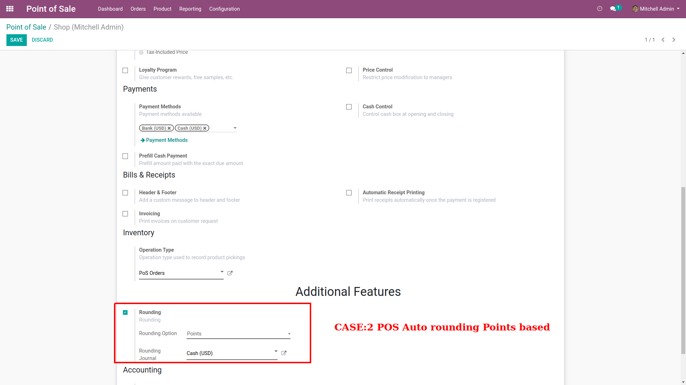
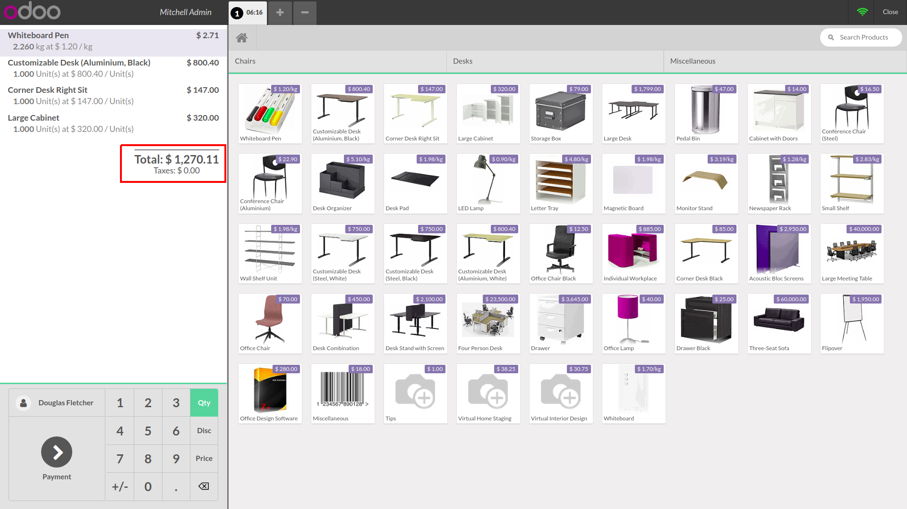
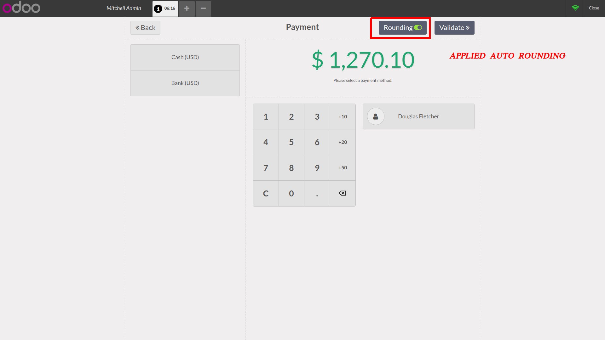
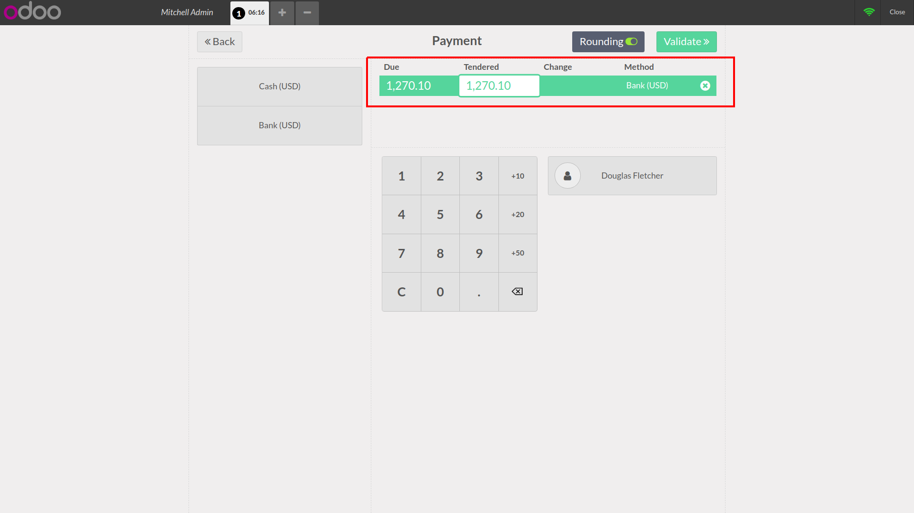
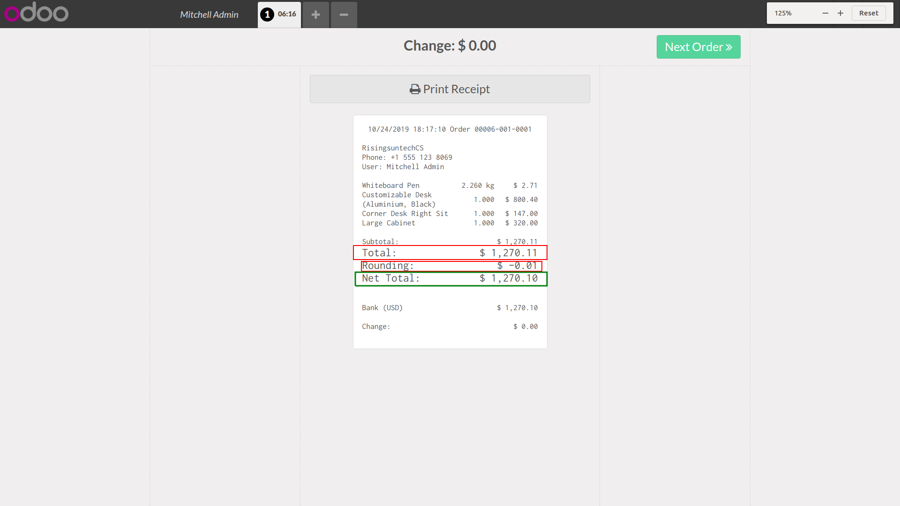
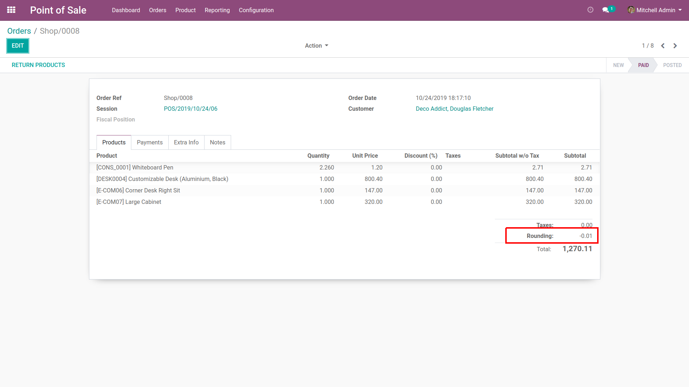

Case:2 POS Auto rounding Based on Points based.
Select confgiuration for Points based Rounding.

Add product in to card as per the Configuration and check total order amount without rounding.

Here using this module rounding is applied automatically on total amount and it will perform auto rounding based on the Points.

Select Payemnt method and proceed for Paymen.

check rounding amount reflected on the POS Receipt.

Here you can check rounding amount in POS Order with Total amount.

Here Rounding amount entry will be reflected in the Journal Entry of Relavent order after validate and Posted Entry to Journal.